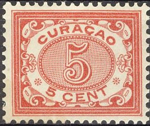
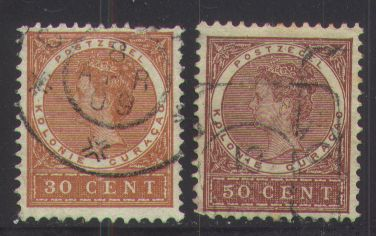
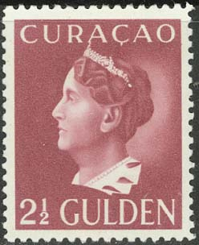
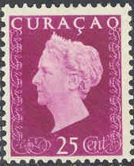
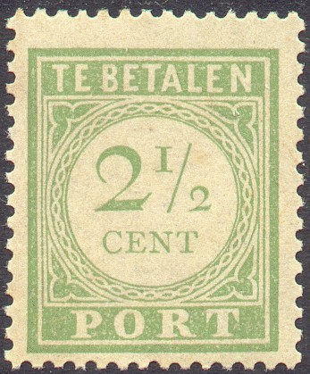

{kind=link}


Curaçao
Return To Catalogue - Curacao, part 1 - Netherlands - Postage due stamps (Te betalen port) - LA GUARIA SAN TOMAS Pto CABELLO PAQUETTE CURACAO
Note: on my website many of the
pictures can not be seen! They are of course present in the
catalogue;
contact me if you want to purchase it.
with couloured background (1903)
1 c green 2 c brown 2 1/2 c green 3 c orange 5 c red 7 1/2 c grey (1908)
Value of the stamps |
|||
vc = very common c = common * = not so common ** = uncommon |
*** = very uncommon R = rare RR = very rare RRR = extremely rare |
||
| Value | Unused | Used | Remarks |
| 1 c | * | * | |
| 2 c | *** | ** | |
| 2 1/2 c | * | * | |
| 3 c | *** | *** | |
| 5 c | * | * | |
| 7 1/2 c | R | *** | |
with white background (1915)

1/2 c violet (1921) 1 c green 1 1/2 c blue (1921) 2 c brown 2 1/2 c green 3 c yellow 3 c green (1926) 5 c red 5 c green (1921) 5 c lilac (1926) 7 1/2 c grey 10 c lilac (1921) 10 c red (1926)
Value of the stamps |
|||
vc = very common c = common * = not so common ** = uncommon |
*** = very uncommon R = rare RR = very rare RRR = extremely rare |
||
| Value | Unused | Used | Remarks |
| 1/2 c | c | c | |
| 1 c | c | c | |
| 1 1/2 c | c | c | |
| 2 c | c | * | |
| 2 1/2 c | * | c | light or dark green |
| 3 c yellow | * | * | |
| 3 c green | * | * | |
| 5 c red | * | c | |
| 5 c green | * | * | |
| 5 c lilac | * | * | |
| 7 1/2 c | * | * | |
| 10 c lilac | ** | ** | |
| 10 c red | * | * | |
surcharged

1 1/2 c on 2 1/2 c green (1931) 2 1/2 c on 3 c green (1931)

10 c grey 12 1/2 c blue 15 c brown 22 1/2 c brown and olive 25 c violet 30 c orange 50 c red Larger size
1 1/2 G brown 2 1/2 G blue
Value of the stamps |
|||
vc = very common c = common * = not so common ** = uncommon |
*** = very uncommon R = rare RR = very rare RRR = extremely rare |
||
| Value | Unused | Used | Remarks |
| 10 c | * | * | |
| 12 1/2 c | ** | c | |
| 15 c | ** | ** | |
| 22 1/2 c | *** | ** | |
| 25 c | ** | * | |
| 30 c | *** | *** | |
| 50 c | *** | *** | |
| 1 1/2 G | R | *** | |
| 2 1/2 G | R | R | |
Similar stamps were issued for Surinam and Netherlands Indies.
Small size, Queen Wilhelmina facing the right, sea with ship on background


With "ST.EUSTATIUS" cancel.
10 c red 12 1/2 c blue 12 1/2 c red (1921) 15 c olive 15 c blue (1926) 20 c blue (1921) 20 c olive (1926) 22 1/2 c orange 25 c lilac 30 c black 35 c black (1921)
Value of the stamps |
|||
vc = very common c = common * = not so common ** = uncommon |
*** = very uncommon R = rare RR = very rare RRR = extremely rare |
||
| Value | Unused | Used | Remarks |
| 10 c | *** | *** | |
| 12 1/2 c blue | ** | * | |
| 12 1/2 c red | ** | ** | |
| 15 c olive | ** | ** | |
| 15 c blue | ** | * | |
| 20 c blue | ** | ** | |
| 20 c olive | ** | ** | |
| 22 1/2 c | *** | ** | |
| 25 c | ** | * | |
| 30 c | ** | ** | |
| 35 c | *** | *** | |
Surcharged

5 c on 12 1/2 c blue (2 types)
Value of the stamps |
|||
vc = very common c = common * = not so common ** = uncommon |
*** = very uncommon R = rare RR = very rare RRR = extremely rare |
||
| Value | Unused | Used | Remarks |
| 5 c on 12 1/2 c | *** | *** | Two types of surcharge, mainly differing in the '5' |
Larger size, Queen Wilhelmina facing the left, palm trees on background

50 c green 1 1/2 G lilac 2 1/2 G red
Value of the stamps |
|||
vc = very common c = common * = not so common ** = uncommon |
*** = very uncommon R = rare RR = very rare RRR = extremely rare |
||
| Value | Unused | Used | Remarks |
| 50 c | *** | ** | |
| 1 1/2 G | *** | *** | |
| 2 1/2 G | R | R | |
In 1929 some values were overprinted 'LUCHTPOST' (airmail): 50 ct on 12 1/2 c red, 1 gld on 20 c blue and 2 gld on 15 c olive (all R).
Similar stamps were issued for Surinam and Netherlands Indies.
1 c black on brown
The signature represents 'Hendrik Albert Willemsen'.
Value of the stamps |
|||
vc = very common c = common * = not so common ** = uncommon |
*** = very uncommon R = rare RR = very rare RRR = extremely rare |
||
| Value | Unused | Used | Remarks |
| 1 c | *** | *** | |
7 values were issued ranging from 5 c to 5 G: 5 c green, 7 1/2 c green, 10 c red, 20 c grey, 1 G brown, 2.50 G black, 5 G brown.

In 1928 a similar design was issued without the year on top, but with a ship in the bottom part:
6 c orange (1930) 7 1/2 c orange 10 c red 12 1/2 c brown 15 c blue 20 c black 21 c green (1930) 25 c lilac 27 1/2 c black 30 c green 35 c brown Surcharged '6 ct.' on 7 1/2 c orange (1929)

3 c on 15 c green 10 c on 60 c red 12 1/2 c on 75 c brown 15 c on 1.50 G blue 25 c on 2.25 G brown 30 c on 4 1/2 G black 50 c on 7 1/2 G red
6 c orange
Various persons and ship Johannes van Walbeeck:
Willem Usselinx: 1 c grey, 1 1/2 c violet, 2 c red,
Hendrik: 2 1/2 c green, 5 c brown, 6 c blue,
Jacob Binckes: 10 c red, 12 1/2 c brown, 15 c blue,
Ship Johannes van Walbeeck: 20 c black, 21 c brown, 25 c green,
Cornelis Evertsen de Jongste: 27 1/2 c lilac, 30 c red, 50 c
orange,
Brion: 1.50 G blue, 2.50 G brown.

1 c brown 1 1/2 c blue 2 c orange 2 1/2 c green 5 c red
6 c lilac 10 c red 12 1/2 c green 15 c blue 20 c orange 21 c black 25 c brown 27 1/2 c brown 30 c olive 50 c green 1.50 G grey 2.50 G red
3 values

Later issued stamps with face of Queen Wilhelmina
In this design exist: 6 c violet, 10 c red, 12 1/2 c green, 15 c blue, 20 c orange, 21 c black, 25 c red, 27 1/2 c brown, 30 c olive, 50 c green and in a larger size: 1 1/2 G brown, 2 1/2 G red, 5 G green and 10 G orange.

6 c brown, 10 c red, 12 1/2 c green, 15 c blue,
20 c orange, 21 c black, 25 c lilac, 27 1/2 c brown, 30 c olive,
50 c green
Larger size: 1.50 G brown.
6 c red 12 1/2 c blue
6 c brown 12 1/2 c green
6 c + 10 c olive 10 c + 15 c red 12 1/2 c + 20 c grey 15 c + 25 c blue 20 c + 30 c brown 25 c + 35 c violet
6 c green (ship) 12 1/2 c red (person) 15 c blue (design as 6 c)
6 c red 25 c blue
1 c brown 1 1/2 c blue 2 c orange 2 1/2 c green 3 c violet 5 c red
6 c violet 10 c red 12 1/2 c green 15 c blue 20 c orange 21 c black 25 c violet 27 1/2 c brown 30 c olive 50 c green Larger size 1 1/2 G green 2 1/2 G olive 5 G red 10 G violet

Inscription "TE BETALEN PORT" in green with black
letters
For more Postage due stamps ("TE BETALEN PORT" in green) click here.
Some fiscal stamps of The Netherlands were issued in 1910 with overprint "CURACAO" (sorry, no picture available yet, if anyboday possesses a picture, please contact me!).
Curacao and Ned.Antillen fiscal stamps
The following values exist f0,05 red, f0,50 green, f1,00 green and f2,50 green. In the background is written "PLAKZEGEL" (=label). I have seen in the same design F0,05 red, F0,10 green, F0,20 green, F1,00 green and a F4,00 green stamp with inscription "NED. ANTILLEN" (see image above), but now with "de 19".
I have seen postcards (Briefkaart) in the same design as the King William III stamps of 1873 in the value 5 c red and 15 c brown.
(Postal stationery 7 1/2 c)
10 c green 15 c blue 25 c brown 30 c yellow 35 c blue 40 c green 45 c orange 50 c red 60 c lilac 70 c grey 1.40 G brown 2.80 G olive

Later issue, image of Queen Wilhelmina and aeroplane, inscription
"CURACAO LUCHTPOST"
Postzegels - Stamps - Timbres-Poste - Briefmarken
{kind=link}
{kind=link}
{kind=link}